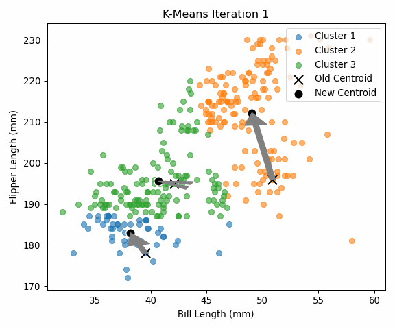

species bill_length_mm flipper_length_mm
0 Adelie 39.1 181
1 Adelie 39.5 186
2 Adelie 40.3 195
3 Adelie 36.7 193
4 Adelie 39.3 190
Dataset shape: (333, 2)Machine Learning
Assignment 4
todo: do two analyses. Do one of either 1a or 1b, AND one of either 2a or 2b.
1a. K-Means
todo: write your own code to implement the k-means algorithm. Make plots of the various steps the algorithm takes so you can “see” the algorithm working. Test your algorithm on the Palmer Penguins dataset, specifically using the bill length and flipper length variables. Compare your results to the built-in kmeans function in R or Python.
todo: Calculate both the within-cluster-sum-of-squares and silhouette scores (you can use built-in functions to do so) and plot the results for various numbers of clusters (ie, K=2,3,…,7). What is the “right” number of clusters as suggested by these two metrics?
If you want a challenge, add your plots as an animated gif on your website so that the result looks something like this.
1b. Latent-Class MNL
todo: Use the Yogurt dataset to estimate a latent-class MNL model. This model was formally introduced in the paper by Kamakura & Russell (1989); you may want to read or reference page 2 of the pdf, which is described in the class slides, session 4, slides 56-57.
The data provides anonymized consumer identifiers (id), a vector indicating the chosen product (y1:y4), a vector indicating if any products were “featured” in the store as a form of advertising (f1:f4), and the products’ prices in price-per-ounce (p1:p4). For example, consumer 1 purchased yogurt 4 at a price of 0.079/oz and none of the yogurts were featured/advertised at the time of consumer 1’s purchase. Consumers 2 through 7 each bought yogurt 2, etc. You may want to reshape the data from its current “wide” format into a “long” format.
todo: Fit the standard MNL model on these data. Then fit the latent-class MNL on these data separately for 2, 3, 4, and 5 latent classes.
todo: How many classes are suggested by the \(BIC = -2*\ell_n + k*log(n)\)? (where \(\ell_n\) is the log-likelihood, \(n\) is the sample size, and \(k\) is the number of parameters.) The Bayesian-Schwarz Information Criterion link is a metric that assess the benefit of a better log likelihood at the expense of additional parameters to estimate – akin to the adjusted R-squared for the linear regression model. Note, that a lower BIC indicates a better model fit, accounting for the number of parameters in the model.
todo: compare the parameter estimates between (1) the aggregate MNL, and (2) the latent-class MNL with the number of classes suggested by the BIC.
2a. K Nearest Neighbors
todo: use the following code (or the python equivalent) to generate a synthetic dataset for the k-nearest neighbors algorithm. The code generates a dataset with two features, x1 and x2, and a binary outcome variable y that is determined by whether x2 is above or below a wiggly boundary defined by a sin function.
todo: plot the data where the horizontal axis is x1, the vertical axis is x2, and the points are colored by the value of y. You may optionally draw the wiggly boundary.
todo: generate a test dataset with 100 points, using the same code as above but with a different seed.
todo: implement KNN by hand. Check you work with a built-in function – eg, class::knn() or caret::train(method="knn") in R, or scikit-learn’s KNeighborsClassifier in Python.
todo: run your function for k=1,…,k=30, each time noting the percentage of correctly-classified points from the test dataset. Plot the results, where the horizontal axis is 1-30 and the vertical axis is the percentage of correctly-classified points. What is the optimal value of k as suggested by your plot?
2b. Key Drivers Analysis
todo: replicate the table on slide 75 of the session 5 slides. Specifically, using the dataset provided in the file data_for_drivers_analysis.csv, calculate: pearson correlations, standardized regression coefficients, “usefulness”, Shapley values for a linear regression, Johnson’s relative weights, and the mean decrease in the gini coefficient from a random forest. You may use packages built into R or Python; you do not need to perform these calculations “by hand.”
If you want a challenge, add additional measures to the table such as the importance scores from XGBoost, from a Neural Network, or from any additional method that measures the importance of variables.
K-Means Clustering
K-Means is an unsupervised learning algorithm that groups unlabeled data into k clusters based on similarity. The goal is to partition the data so that points in the same cluster are more similar to each other than to those in other clusters . In essence, K-Means tries to find cluster centers (called centroids) that minimize the distance of each point to its nearest centroid .
How does K-Means work? At a high level, the algorithm follows an iterative refinement procedure : • Initialize – Choose k initial centroids (often random picks from the data). • Assign – For each point, find the nearest centroid (by Euclidean distance) and assign the point to that cluster. • Update – Recompute each centroid as the average (mean) of all points assigned to it. • Repeat – Iterate the assign-update steps until centroids stop changing (convergence).
This process will partition the dataset into k clusters such that each point belongs to the cluster with the closest centroid. The algorithm stops when successive iterations no longer change the centroids (or change them negligibly), meaning the clustering has stabilized. The result is a set of clusters and their centroid locations.
To demonstrate K-Means, we’ll use the Palmer Penguins dataset, a popular alternative to the iris dataset. It contains measurements for three penguin species (Adelie, Chinstrap, Gentoo) from islands in Antarctica. We will use just two features for clustering: bill length and flipper length (both in mm). This gives us a 2D dataset that we can easily visualize. We will ignore the species labels during clustering (since K-Means is unsupervised), but it’s worth noting there are 3 true species in the data (which might correspond to 3 clusters).
First, let’s load the dataset and take a peek at the data structure:
We have 332 penguin observations with bill length and flipper length. Now, let’s implement the K-Means algorithm from scratch for a chosen number of clusters, K=3. (Choosing 3 is a reasonable guess here given the three species, but we will later analyze different k values.)
Implementing K-Means from Scratch
We’ll write a simple implementation of K-Means. The plan:
Randomly initialize 3 centroids by selecting 3 random points from the dataset.
Loop until convergence: • Compute the distance from each data point to each centroid. • Assign each point to the nearest centroid (forming 3 clusters). • Recompute each centroid as the mean of the points in its cluster. • If centroids don’t change (or change very little), break out.
We’ll also keep track of the cluster assignments at each iteration so we can visualize the progression.
Initial centroids (randomly chosen):
[[ 39.5 178. ]
[ 50.9 196. ]
[ 42.1 195. ]]
Converged after 9 iterations.
Final centroids:
[[ 38.45304348 187.05217391]
[ 47.6296 216.92 ]
[ 45.95483871 196.7311828 ]]Next, we’ll visualize the clustering process to see how K-Means reached this result.
Visualizing the K-Means Iterations
To better understand K-Means, it helps to visualize how the centroids move and how points switch clusters over iterations. We will plot the data points colored by their cluster at each iteration, and show the centroid positions. An animated GIF can illustrate the process over time. Below, we generate plots for each iteration and combine them into a GIF:
GIF saved as kmeans_steps_a93314.gif